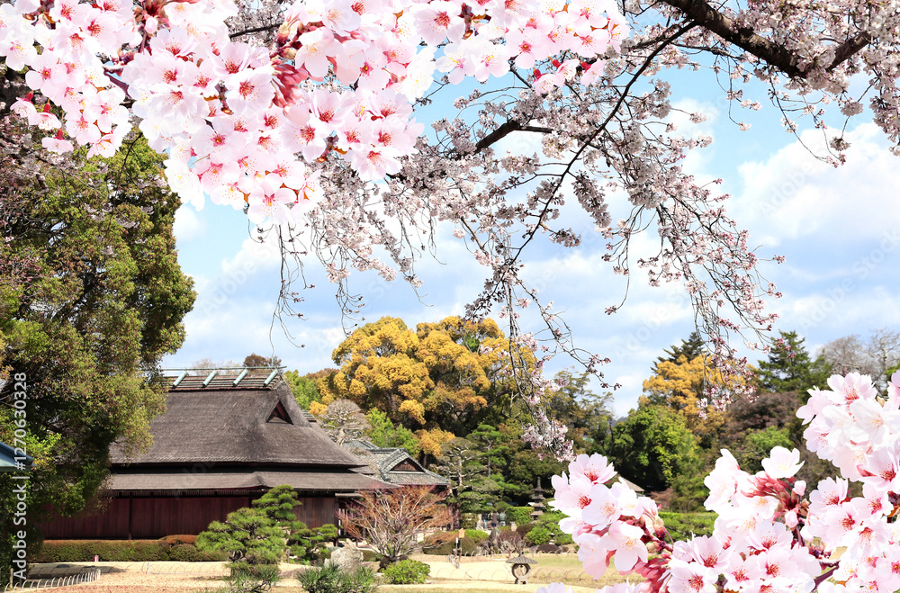
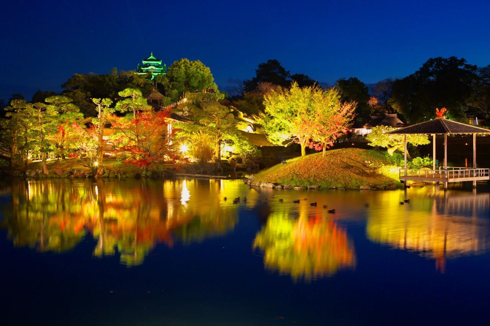
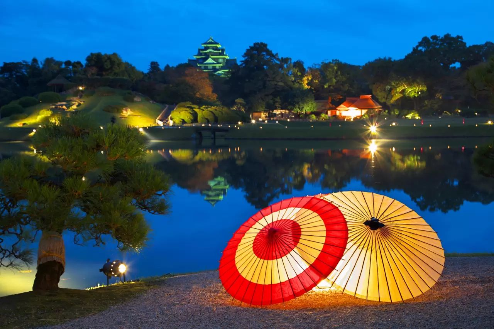
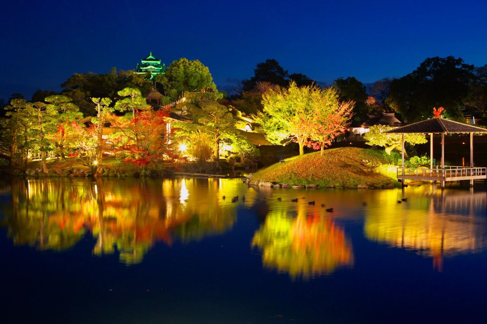
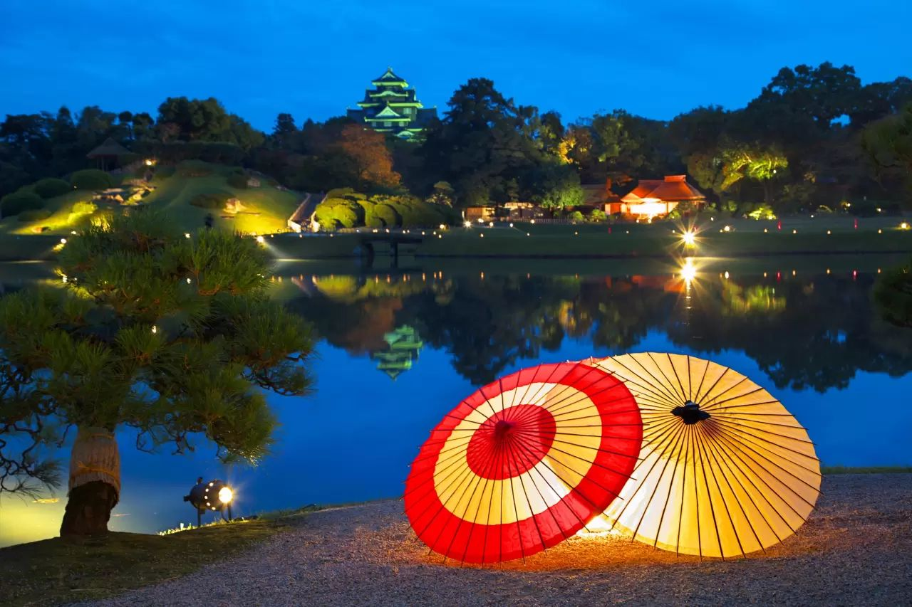
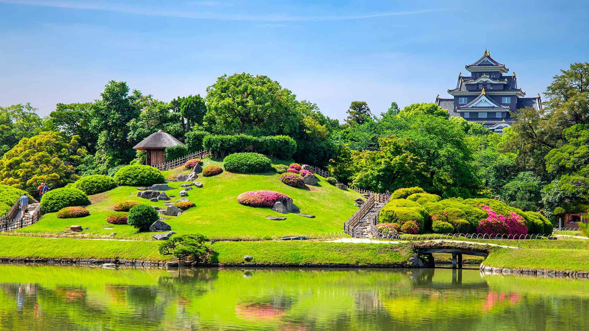
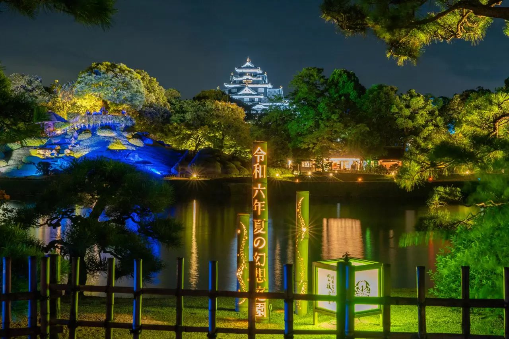

見どころ
後楽園には数多くの見どころがあります。以下に主なスポットを紹介します。
四季の魅力

春：桜、ツツジ、藤の花が咲き誇る
 




秋：紅葉と萩の花、中秋の名月観賞会

冬：雪景色、梅の花、正月の伝統行事
アクセス
岡山後楽園へのアクセス方法は以下の通りです。
| 交通手段 | 詳細 |
|---|---|
| 電車 | JR岡山駅からバスで約15分、「後楽園前」下車すぐ |
| 路面電車 | 岡山駅前から岡山電気軌道東山行きで約10分、「城下」下車、徒歩10分 |
| 車 | 山陽自動車道岡山ICから約20分（駐車場あり） |
基本情報
| 名称 | 岡山後楽園 |
|---|---|
| 所在地 | 〒703-8257 岡山県岡山市北区後楽園1-5 |
| 開園時間 | 【3月20日～9月30日】7:30～18:00 【10月1日～3月19日】8:00～17:00 |
| 休園日 | 12月29日～31日 |
| 入園料 | 大人：500円、小人（小中学生）：140円 |
| 公式サイト | https://www.okayama-korakuen.jp/ |
岡山城との共通券も販売されています。両方訪れる予定の方は、共通券の購入がお得です。